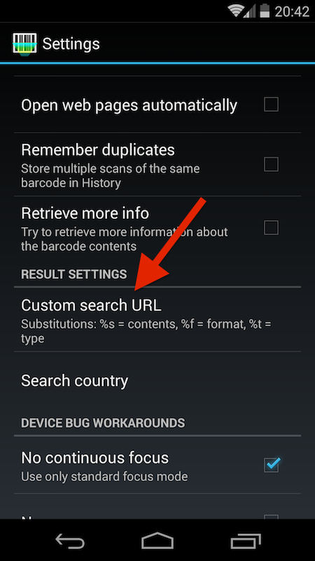
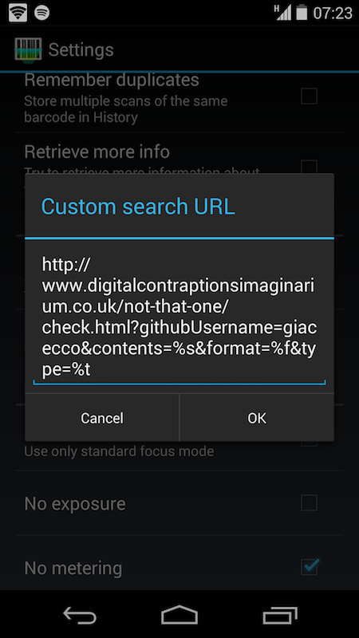
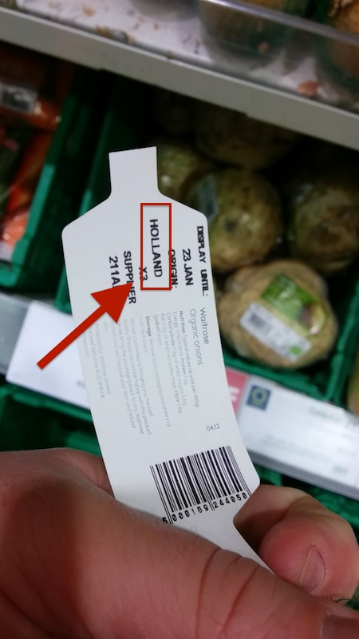
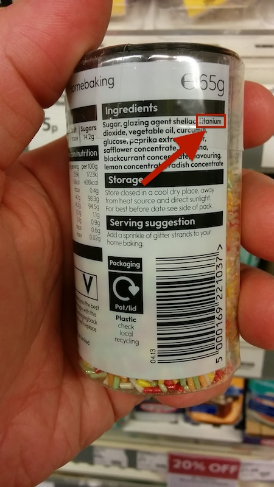
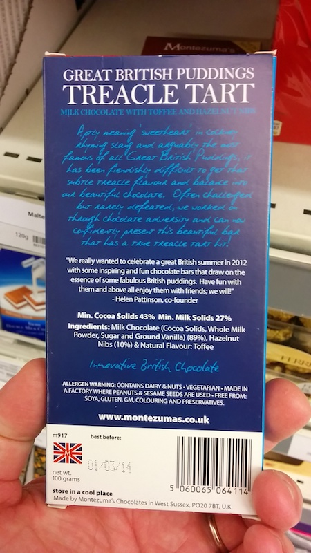
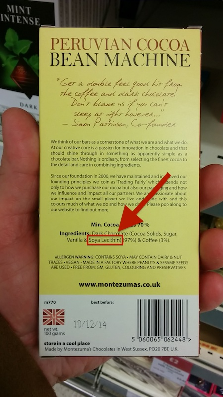
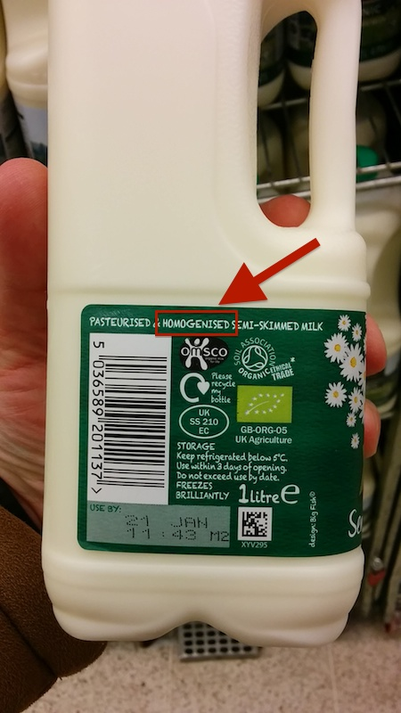

{kind=link}
{kind=link}
{kind=link}
{kind=link}
{kind=link}

Even without knowing everything about the packaged food we buy, there often are one or more elements that suggest we should rather buy something else. They are like 'tells' that hint at the fact that that one product is simply worse than others that don't have those same characteristics.
The tells may be based on:
The Not That One! app helps you spotting those tells without spending hours studying and doing the shopping. Just point your mobile phone to the item's barcode - or shop online only on participating websites - and let Not That One! tell you if you should rather buy something else.
If you have an Android phone you will be able to simulate how the app works before we develop it!
Install the free Barcode Scanner app and configure it for performing "custom searches". Go to Settings / Results settings and set the Custom search URL to use http://www.digitalcontraptionsimaginarium.co.uk/not-that-one/check.html?githubUsername=giacecco&contents=%s&format=%f&type=%t
|  |  |
... then use Barcode Scanner to run custom searches on the products below (click to see the full size image).
|  |  |  |  |  | |
Well, you just need to define your own rules. The rules are saved in the form of a GitHub repository such as this.
While waiting for someone to write the documentation, trust me on the fact that you can "fork" the repository and make one of your own, where the tells differ, and the whitelisted products differ. Don't worry though as you can still benefit of the work that went into the original set of rules, that you can "propagate" to yours as needed.